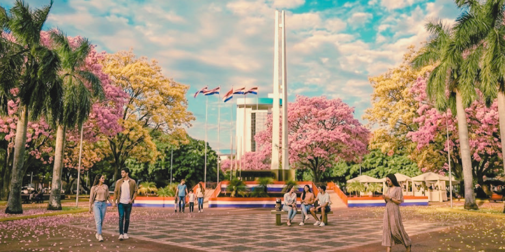

Monumento al Holodomor
Homenaje a las víctimas de la gran hambruna ucraniana, símbolo de resiliencia en la ciudad.

Plaza de Armas · Encarnación
Caminar por la Plaza de Armas es repasar las páginas de nuestra historia. Cada rincón alberga un homenaje: desde la gesta de nuestros héroes nacionales hasta los lazos de hermandad internacional. Un espacio diseñado para recordar, aprender y admirar.
Homenaje a las víctimas de la gran hambruna ucraniana, símbolo de resiliencia en la ciudad.

Escultura del poeta y pintor ucraniano, emblema de la hermandad cultural de Itapúa.

Estatua de mármol blanco que celebra el pilar fundamental de la sociedad paraguaya.
Un rincón de paz e intercambio literario bajo la sombra de los lapachos milenarios.
El icónico Torii rojo que simboliza la integración de la comunidad japonesa en Paraguay.
Localiza los 5 hitos históricos dentro de la Plaza de Armas.
Explora el mapa para ver la ubicación exacta de los monumentos